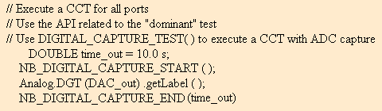
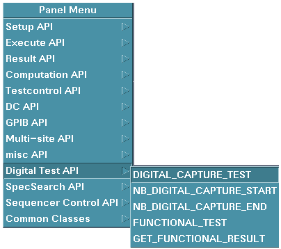

To execute a non-blocking digital capture test
The figure below shows example test method code for executing a digital capture test in non-blocking mode and simultaneously communicating with analog instrumentation during the test.

Test Method Code |
Description |
|---|---|
DOUBLE time_out = 10.0 s; |
Defined variable for time_out. |
NB_DIGITAL_CAPTURE_START ( ); |
Start a digital capture test. |
Analog.DGT (DAC_out) .getLabel ( ); |
Communicate with analog instruments. |
NB_DIGITAL_CAPTURE_END (time_out); |
Wait for digital capture to end and clean up. Sequencer will time out at 10.0 s. |
- From the Text Editor window, click the right mouse button.
The figure below shows the Setup API selection in the Panel Menu to access the Test Method Panel for executing a digital capture test in non- blocking mode.

- Choose Digital Test API > NB_DIGITAL_CAPTURE_START from the Panel Menu to create the test method code for starting the test as shown above.
- Choose Digital Test API > NB_DIGITAL_CAPTURE_END from the Panel Menu to create the test method code for ending the test as shown above.
- (Optional) Complete the sequencer time out entry and select OK to enter the code into the Test Method Editor window. The window will default if nothing is entered.
Functional changes
- Introduced before SmarTest 6.3.2